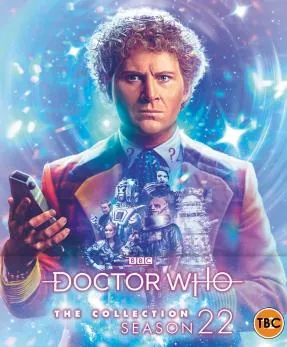

The genetics
The villain is Dastari, a biogeneticist who wants to extract the knowledge of time travel from the Second Doctor's genetic make-up. His plan first involves dissecting the Doctor's cells to isolate the "symbiotic nuclei" that let Time Lords travel in time; then, at Chessene's request, he implants the Doctor with a "50 per cent Androgum inheritance" from another person's blood, a forced transformation into a hybrid that would let the augmented Androgum use a time machine. The procedure is done without consent, both from the captive Doctor and from Shockeye, whose blood is used, and the Doctor gradually reverts once freed. Dastari, who serves the augmented Chessene, realises too late that she remains a predator and is killed by her. The serial treats biogenetics as a tool of power-seeking villains; writer Robert Holmes framed the whole story as an allegory of meat-eating. The idea that time travel is encoded in genes is pure fantasy.
How genetics is portrayed
- Overall portrayal of genetics
- negative Biogenetics is the instrument of kidnapping and forced transformation by power-seeking villains, with no positive counterpart.
- Outcome of the genetic intervention
- negative The Second Doctor is forcibly hybridised with blood taken from Shockeye without consent; the change only fails to become permanent because Shockeye breaks him out, and the plot ends in several deaths.
- Dastari
- villain Aim: power (negative). The biogeneticist Dastari, head of projects on the research station Space Station Camera, plans to extract the secret of time travel from the Second Doctor's genes and gives him a forced '50 per cent Androgum inheritance' to serve Chessene; he relents too late and is shot by her.
- Chessene
- villain Aim: power (negative). The augmented Androgum Chessene, conspiring with the Sontarans, asks Dastari to turn the Doctor into an Androgum so she can use the time module; she kills Dastari and dies in the sabotaged module.
The story
On Space Station Camera the Second Doctor and Jamie tell Dastari, the station's head of projects, that the Time Lords want his time experiments stopped. The gluttonous Androgums, allied with the Sontarans, drug the crew and capture the Second Doctor. The Sixth Doctor, Peri and Jamie follow the captors to a hacienda near Seville. There Dastari plans to dissect the Second Doctor's cell structure to isolate his "symbiotic nuclei", which would give the secret of time travel to Chessene, an Androgum technologically augmented to genius level; Chessene asks him instead to turn the Doctor into an Androgum who can operate a time module. Dastari gives the Second Doctor a "50 per cent Androgum inheritance" using the blood of the cook Shockeye, who breaks him out before the change becomes permanent. After Shockeye murders a restaurant owner, the Sixth Doctor kills him, Chessene shoots Dastari, and Chessene dies in the sabotaged module.